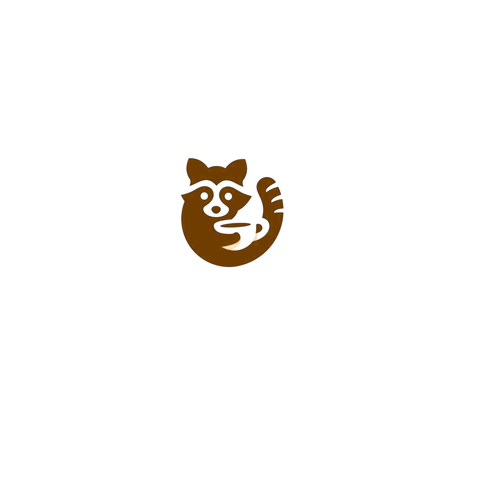

Raccoon
Bakery

Mais do que uma padaria, a Raccoon Bakery é um ponto de encontro com as coisas simples e boas da vida. Criamos um espaço onde o aroma do pão artesanal quentinho se mistura ao som de conversas baixas e risadas.
Um lugar para aquecer as mãos na xícara de café e nutrir o coração com o melhor da panificação.
Puxe uma cadeira, respire fundo e sinta-se em casa na nossa toca.

"A melhor padaria da cidade! O pão é sempre fresco e delicioso."
- Maria S."Adoro o ambiente acolhedor e o atendimento amigável. Recomendo a todos!"
- João P."Os doces são incríveis, especialmente os croissants. Vale a pena experimentar!"
- Ana L.